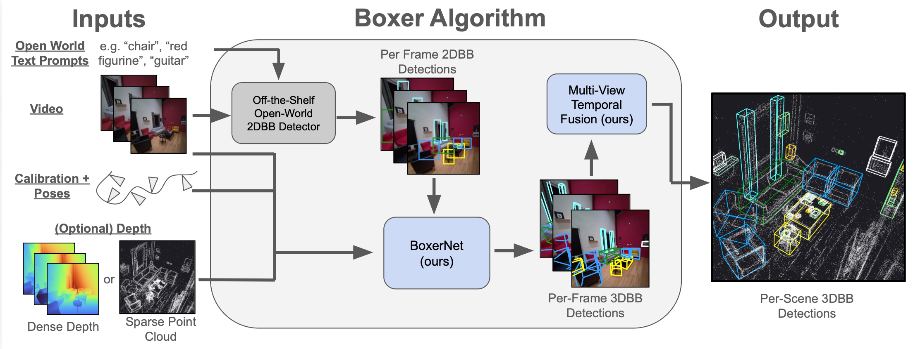
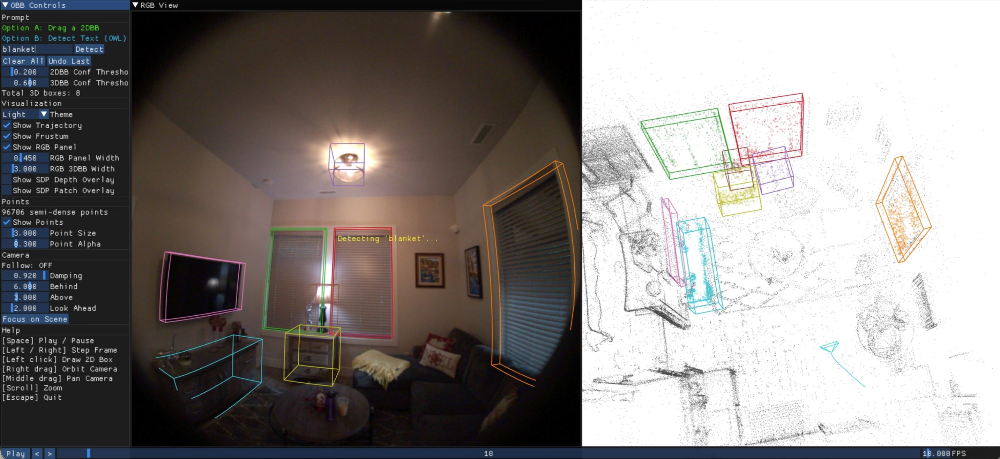
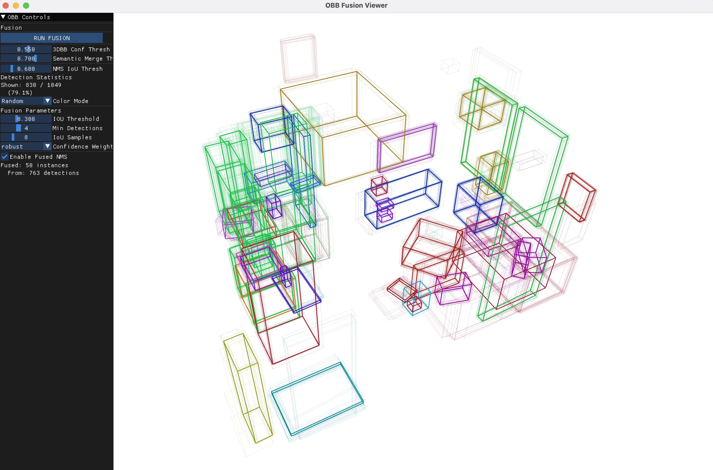

Robust Lifting of Open-World 2D Bounding Boxes to 3D
Boxer lifts 2D object detections into static, global, fused 3D oriented bounding boxes (OBBs) from posed images and semi-dense point clouds. It is focused on indoor object detection and comes with a pre-trained model for running inference on a variety of data sources.

Boxer uses a three-stage pipeline. First, an open-vocabulary 2D detector (OWLv2) finds objects in each frame. Then, BoxerNet lifts each 2D detection into a 3D oriented bounding box using camera intrinsics, gravity direction, and optional semi-dense depth. Finally, detections across frames can be fused offline or tracked online for temporal consistency.
OWLv2 open-vocabulary detector finds objects using text prompts or manual 2D bounding box prompts. Supports custom label taxonomies.
BoxerNet encodes the image crop with DINOv3, cross-attends with camera and depth features, and predicts a full 3D oriented bounding box per detection.
Per-frame 3D boxes are merged via offline Hungarian-algorithm fusion or online tracking for globally consistent scene-level 3D detections.
2D bounding box prompts can be used to quickly annotate and estimate 3D oriented bounding boxes in any scene. Draw a box, and Boxer lifts it to 3D in real time. This is an example from CA-1M.
Boxer works out of the box with multiple data sources. For each, it requires images, camera intrinsics, gravity direction, and optionally depth. For video sequences, 6-DoF poses enable multi-frame fusion.
Full support including fisheye cameras, VRS recordings, and semi-dense point clouds from visual-inertial SLAM.
Large-scale indoor dataset with posed RGB-D sequences for benchmarking 3D object detection.
Single-image indoor scenes with depth maps via the Omni3D dataset interface.
Dense indoor reconstructions with posed RGB-D frames for room-scale 3D detection.
Get Boxer running in minutes.
git clone https://github.com/facebookresearch/boxer
cd boxer
curl -LsSf https://astral.sh/uv/install.sh | sh # install uv
uv venv boxer --python 3.12
source boxer/bin/activate
uv pip install 'torch>=2.0' numpy opencv-python tqdm dill
uv pip install projectaria-tools # Aria support
uv pip install moderngl moderngl-window imgui-bundle # 3D viewerbash scripts/download_ckpts.sh
bash scripts/download_aria_data.sh# Headless inference (90 frames)
python run_boxer.py --input nym10_gen1 --max_n=90 --skip_viz
# Interactive prompt demo
python view_prompt.py --input nym10_gen1
# Offline fusion visualization (uses output from headless run above)
python view_fusion.py --input nym10_gen1
# Online tracker
python view_tracker.py --input nym10_gen1 --autoplay
Interactive demo: create 2D bounding box prompts and enter text to prompt OWL to detect objects in real time.

Offline 3D fusion: merge per-frame 3D bounding box predictions into globally consistent oriented bounding boxes.
If you find Boxer useful in your research, please consider citing:
@article{boxer2026,
title={Boxer: Robust Lifting of Open-World 2D Bounding Boxes to 3D},
author={Daniel DeTone and Tianwei Shen and Fan Zhang and Lingni Ma and Julian Straub and Richard Newcombe and Jakob Engel},
year={2026},
}